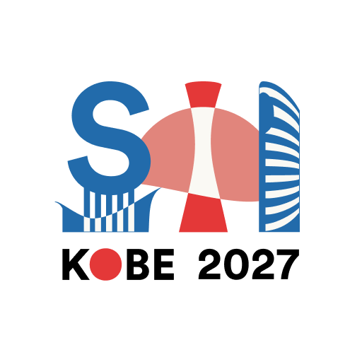

投稿していた研究が、国際会議 SII 2027（IEEE/SICE International Symposium on System Integration）に、Late Breaking Report として採択されました。

発表する研究
発表タイトルは “Wearable Self-Localization for the Visually Impaired with Visual Landmarks and Pedestrian Dead Reckoning” です。視覚障害者向けのウェアラブル自己位置推定について、視覚ランドマークと歩行者自律航法（PDR）を組み合わせた研究で、私が大学院で取り組んでいるテーマそのものです。研究の概要はトップページの Research にもまとめています。
開催概要
| 会議 | SII 2027（IEEE/SICE International Symposium on System Integration） |
|---|---|
| 会期 | 2027年1月11日〜14日 |
| 会場 | 神戸国際会議場 |
| 形式 | ポスター発表（A0縦）・Late Breaking Report |
国際会議での発表は初めてです。A0ポスターを印刷して持参する形式なので、まずはポスターの構成を考えるところから準備を進めていきます。
年末の予定
その前に、12月3日〜4日には ViEW2026（パシフィコ横浜）での発表も控えています。発表予定の一覧はトップページの Presentations に載せています。
年末に向けて発表準備が続きますが、どちらも良い発表にできるよう頑張ります。当日の様子は、終わったらまたこのブログで報告します。